Hannah Bend, Sathish Kumar, Yohann Smadja and Sanjay Tiwari
December 13, 2016
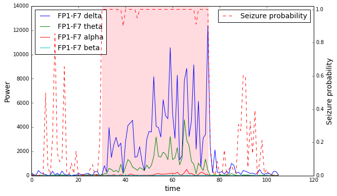
1 Introduction
1.1 Epilepsy and Seizures
The epilepsy is most common neurological disorder in which clusters of nerve cells (neurons), in the brain sometimes signal abnormally and cause seizures. Currently it affects 60 million people all over the world. Normal function of neurons is to generate electrical and chemical signals that act on other neurons, in turn cause secondary actions leading to a undesired behavior. During a seizure, many neurons try to send signal at the same time, this abnormal surge of excessive electrical activity causes involuntary movements, and may cause a loss of control, lapse of attention or whole-body convulsion.
The introduction of new anti-epileptic drugs has made the most patient control the neurological disorder, still one-third of people with epilepsy continue to have seizures despite treatment. In addition, the nature of the disease is quite unpredictable creates significant anxiety to the patients, mainly due to the fact that patients can experience loss of control and/or awareness. Thus detection and future predictions are key to minimize or eliminate the anxiety and fears at least in the cases where drug has no affect. A device able to detect seizures quickly could also improve patient care.
1.2 A classification problem
Seizure detection is usually done using scalp electroencephalogram (EEG), a non-invasive, multichannel recording of the brain’s electrical activity. Classification between a normal activity and a seizure is usually done in two steps: noise filtering and classification. We propose here two approaches to noise filtering. We will use two transforms, Fourier and Discrete wavelets, to filter the data but also extract the useful information and structure behind the signals. We will test classical models of classification and Python’s sklearn libraries to run them.
1.3 Data
A study was conducted at the Children’s Hospital Boston where EEG was recorded on pediatric subjects with intractable (i.e. epileptic) seizures. There were 22 subjects in the study: 5 male, ages 3-22, and 17 females, ages 1.5-19; subject 21 was evaluated a second time 1.5 years later, thus resulting in 23 cases. Each case contains between 9 and 42 continuous .edf files from a single subject, typically consisting of one hour each. Prior to measuring, subjects were taken off of any antiseizure medication. The files can be found at https://physionet.org/physiobank/database/chbmit/
1.4 EEG Samples
Most of the EEG files have 23 recordings from electrodes placed around the head of the patient. Figures 1 presents two EEG recordings of 40 seconds each. The first one was recorded at 1:43pm, while the patient was awake, and so should represent normal activity of the brain. The second one was recorded 50 minutes later. Within this 40 seconds, the patient experiences one epileptic seizure. As the size of the EEG makes it difficult to assess how much bigger the amplitudes are when the patient is experiencing a seizure, Figure 2 zooms in on one channel for the non-seizure and seizure activity. Here we begin to see a marked difference between the two.
1.5 Data cleaning
We have noticed that the channel T8-P8 appears twice in the EEG files. The name and the time series are identical. We also notice that the channel T7-P7 and P7-T7 (logically) present the same information. The dataset was used for the phD thesis of Ali Shoeb who makes no mention of cleaning the data but does filter the signals before doing any feature engineering.
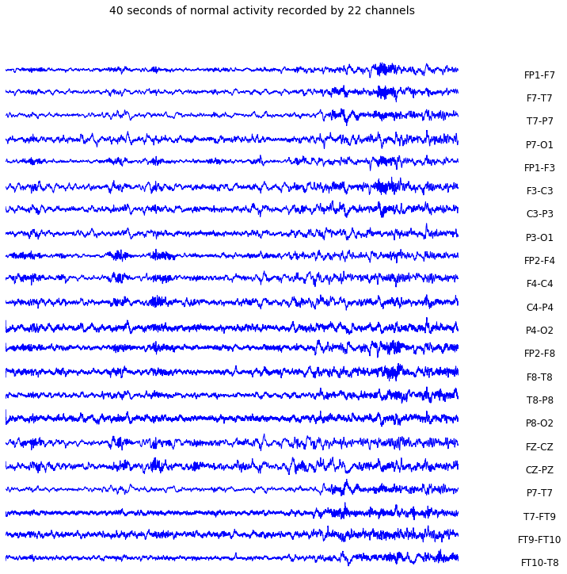
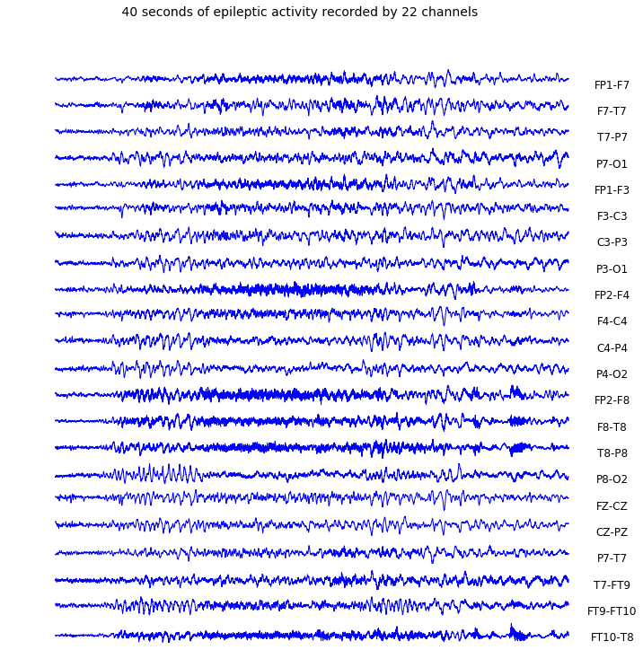
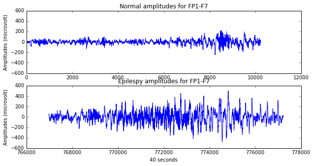
2 Feature Engineering
Higher EEG amplitudes is not the only factor to detect a seizure. The brain’s activity is often composed of multiple frequency components. We will study the presence or absence of some components to classify what is a seizure and what is not. We used two techniques to extract the components from the original time series: The Fourier transform and Discrete Wavelet transform.
2.1 Fourier Transform
The Fourier decomposes the EEG time series into a voltage by frequency spectral graph commonly called the ”power spectrum”, with power being the square of the EEG magnitude, and magnitude being the integral average of the amplitude of the EEG signal, measured from (+)peak to (-)peak), across the time sampled, or epoch. This transform helps us visualize the structure behind the signal.
EEG signals can quickly vary over time even during a seizure. They are non-stationary signals hence we will compute power spectrum densities on short intervals. We used two-second epochs like Shoeb and Guttag suggested in their article.
The figure below presents the power spectrum of six two-second epochs recorded by the FP1F7 channel. The three on the right are from normal activity and the three on the right are from the same seizure. We focus on the [0:25Hz] interval where most of the epileptic activity is. Comparing normal to mid-seizure, it is clear that the power spectrum peaks differ both in count and width, indicating that the magnitude of a wave for a given frequency differs between normal activity and seizures.
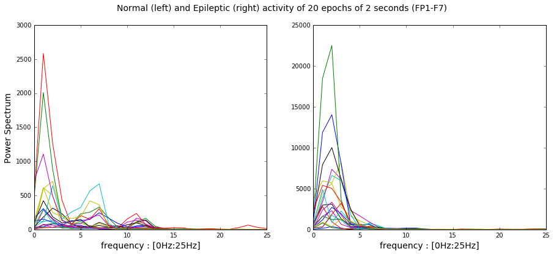
The next figure shows the power spectrum of the 22 EEG channels for 2 seconds of normal and epileptic activity. It is important to include the recordings of all channels as they represent different area of the brain. They each provide some unique information that will help our classifier.
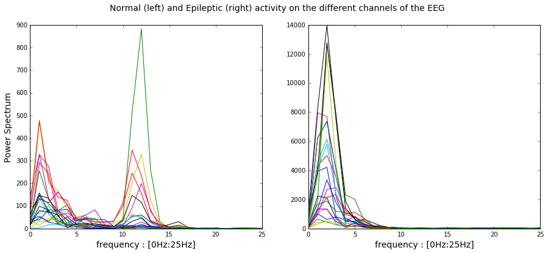
2.2 Brainwaves
Neural oscillations can be observed at all time even when a patient is resting or sleeping. A great analogy is to think of those oscillations as musical notes. Waves with low frequency are like a deeply penetrating drum beat while brainwaves with high frequency are like a high pitched flute. We can see the EEG signals as the partition of a symphony.
- Delta waves (.5 to 3 Hz): Delta brainwaves have the lowest frequency. They are usually generated in deep meditation or dreamless sleep.
- Theta waves (3 to 8 HZ): Theta brainwaves occur most often in sleep and states of reduced consciousness. Theta waves dominate when our body falls asleep. We will see later that those waves are the most important ones during epileptic events.
- Alpha waves (8 to 12 Hz): Alpha brainwaves are dominant when we are quietly thinking and resting.
- Beta waves (12 to 38 Hz): Beta brainwaves dominate our normal waking state of consciousness when attention is directed towards cognitive tasks and the outside world.
Most of the epileptic activity is concentrated in those waves. After computing the power spectrum for each channel on 2-second epochs, we average the powers for each of the 4 brain waves. We now have 88 time series representing the brain activity of our patient. The figure below shows 2D scatter plots of alpha and delta waves for the P4-O2 channel. We notice that the classification might be easier during the night than during the day. The two scatter plots below show the average powers of delta and alpha waves during seizure episodes and during normal activity during the night or the day.

2.3 Discrete Wavelet Transform
The wavelet transform is similar to the Fourier transform with a completely different merit function. A key advantage it has over Fourier transforms is temporal resolution: it captures both frequency and location information (location in time). The discrete wavelet transform (DWT) is an implementation of the wavelet transform using a discrete set of the wavelet scales and translations obeying some defined rules.
The DWT of a signal(x) is calculated by passing it through a series of filters. First the samples are passed through a low pass filter with impulse response(g) and simultaneously the signal is also decomposed using a high-pass filter(h). As an output, we get the detail and approximation coefficients.

Half the frequencies of the signal are removed in every level of filter bank and hence half the samples can be discarded. The decomposition is repeated to further increase the frequency resolution. To illustrate the above, data from EEG files for channel FP1-F17 were passed through 3 levels of filter bank. The below picture shows the mother wavelet(EEG data) and the decomposed wavelets which has been shrunk 3 times because of the DWT process.

Duration of the mother wavelet is one hour. For every second 2^8 frequencies were recorded in the EEG. This mother wavelet was passed through 3 filter banks to decompose the wavelet by 2^3 times. This has significantly reduced the size of the wavelet without loosing information. Also, we have still captured the frequency as well as location(in time) information. We will also analyze the predictions obtained by passing the wavelet through different levels of filter banks.
We can transform EEG data to multiple wavelet forms e.g: Haar wavelets, Daubechies wavelets etc. For our analysis, we will use Daubechies wavelets because of its high orthogonal property which is important for detecting abrupt change in frequencies i.e. seizures. To do a comparison, we will use Haar wavelet as well to see how the results differ. For our analysis, we will only use partial EEG data which includes normal and seizure activity and split the corresponding wavelet to 2 second intervals and each of these splits will become an observation. The coefficients obtained after the wavelet transform will be used as predictors. The same procedure will be done for all channels of the EEG.
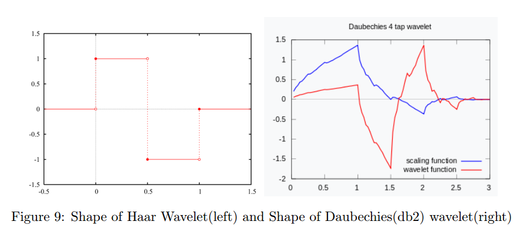
As it is seen above, the shape of the ”Daubechies” wavelet matches the shape of the EEG data. We expect to get better accuracy with daubechies wavelet.
3 A First (Logistic) Model
Using the average powers of brainwaves as predictors, we randomly split our model into a training and a testing set. We used the training set to run a cross validation and find the optimal regularization parameter. A balanced class weights logistic regression led to an accuracy of 97.9% and 90.7% on class 0 (normal activity) and class 1 (seizure) respectively. Our classifier has a high percentage of false positive. We missed almost 10% of epileptic states but the percentage of false negative is low even during the day.
We can use the computed probability of class 1, of being in a state of epilepsy, to visualize how well we are doing during the night and the day.
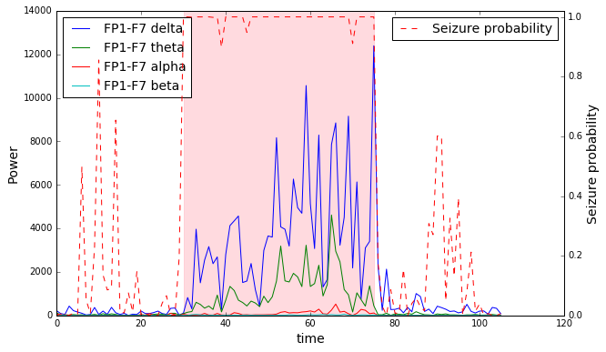
We see a few false positives while the patient is asleep and several instances where the classifier estimates that the seizure is over while it is not. It is important to minimize the number of false negatives, predicting a non-seizure while the patient is experiencing a seizure. Seizures can be dangerous for our patient and a quick detection can be critical.
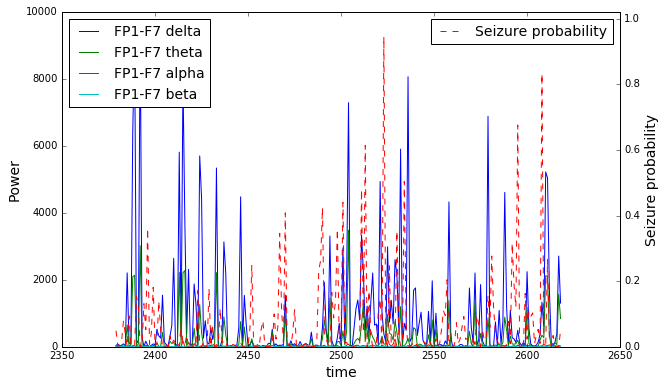
4 Feature Importance
We added to our list of predictors a dummy variable equal to 1 if the recording was during the day, when the patient was supposedly awake, between 8am and 11pm. We also added interactions between the powers of the most important channels. We added a total of 10 new predictors including the dummy variable ”Day”.
We used the feature importance output from Sklearn’s random forest function to understand what are the main predictors. Unfortunately the dummy variable is the least important feature of the 98 predictors. On the other hand, all the interaction terms are in the top 22 features. We could add more of them as the seem to add value to our classifier but with already 98 predictors we if we wanted to add all of them we would have = 3828 new features. We use a data set of 3,040 observations hence we had to select only a subset of interaction terms. Our intuition was to focus on areas of the brain that help discriminate between seizures and normal activity.
5 Classifiers
5.1 Power Spectrum approach
With the number of predictors we are working with, it is impossible to visualize the relationship between the predictors and the outcomes. Thus, we approached model selection by running cross validations of several models on training data and compared their overall accuracy, accuracy on class 0 (normal) and on class 1 (seizure). We ran weighted logistic regressions, Linear and Quadratic Discriminant Analysis classifiers, Random Forests and Gradient Boosting algorithms. We used sklearn’s functions to run those models. The logistic regressions have balanced weighted classes and we tested different values of the regularization parameter C. We did not run any cross validation for Linear Discriminant Analysis and took the default parameters. We tested different values of the regularization parameter for Quadratic Discriminant Analysis. We fixed the number of trees to 300 for Random Forest, the classes were also balanced and we tried different depths. Finally, we set the number of depth to 2, the learning rate to 0.01, changed the random state at every split and tried several number of trees for Gradient Bossting.
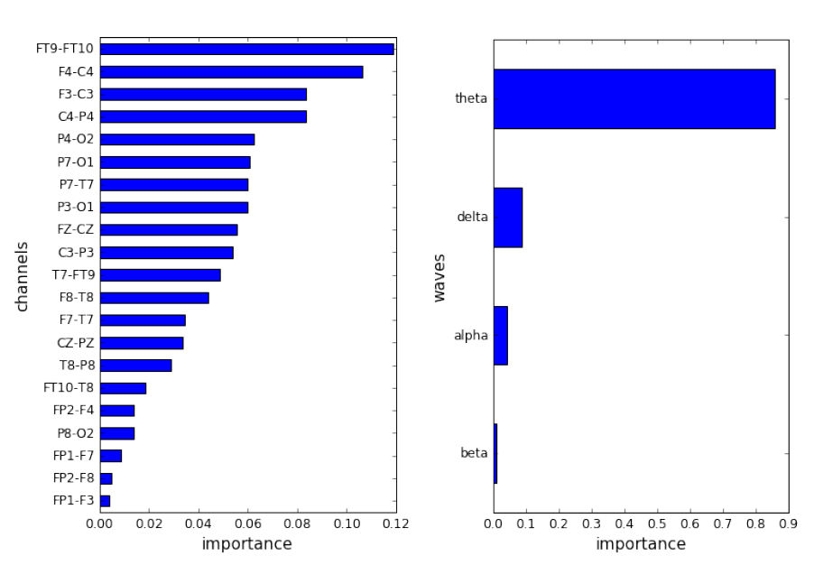
We first randomly split our dataset in a training and a testing set with proportions of 80%/20%. We used the training set to run cross validations by splitting the training set 10 times into 80%/20% sub-training/testing sets. Below are the average accuracy on class 0, class 1 and overall accuracy over the 10 testing sets. The results are in the tables below.
We mentioned earlier that we wanted to select a model that had the best accuracy on class 1 to be able to detect seizures as soon as possible. If models had similar performance then looking at the overall accuracy is the next logic thing to do. Random Forest performed better than Quadratic Discriminant Analysis and Logistic regressions that also have impressive results.
On the testing set, the Random Forest has an accuracy of 96.4% on class 0 and 95.7% on class 1.
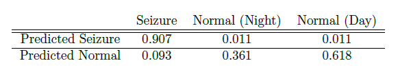

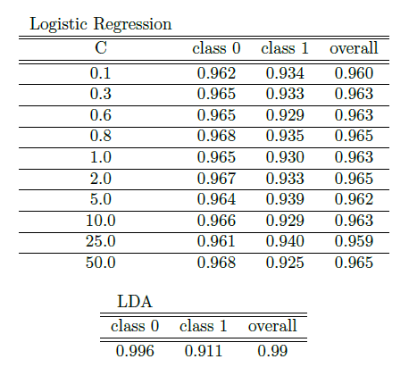
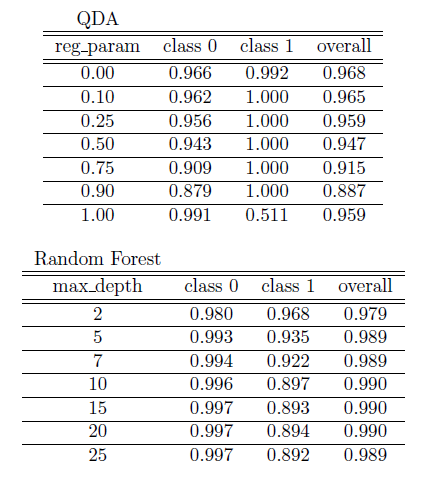
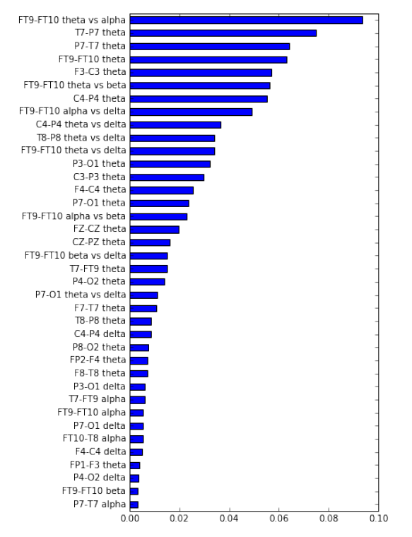
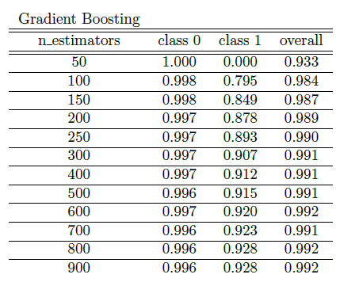
5.2 Discrete Wavelet Transform approach
All the analysis done for Power spectrum approach were followed for DWT approach as well for consistency reasons. Also, doing similar analysis will help us compare both the processes and the final results arrived through both the approaches.
Similar to the power spectrum approach, DWT approach has also more than 50 predictors, so it is impossible to visualize the relationship. Also, model selection was done in the same manner as Power spectrum approach and compared their overall accuracy, accuracy on class 0(normal) and class 1(seizure).
We ran multiple algorithms like Weighted Logistic regression, k-nearest neighbors, Linear and Quadratic Discriminant Analysis, Random Forest algorithms. We used sklearn’s functions to run those models. The logistic regressions have balanced weighted classes and we tested different values of the regularization parameter C. We did not run any cross validation for Linear Discriminant Analysis and took the default parameters. We ran random forest with different values of trees ranging from 50 to 300 and depths ranging from 2 to maximum. Finally at a depth of 5 and number of trees as 300, we were able to get the best accuracy possible for both the classes(seizure and normal).
We randomly split the data set as training and testing set with proportions of 80% and 20%. We used the training set to run cross validations by splitting the training set 10 times into80% and 20% sub-training/testing sets. Below are the average accuracy on class 0, class 1.
Random forest is also the best model to predict seizures using the Discrete Wavelet transform. Random Forest gave an accuracy of 89.9% on class 0(normal) and 93.2% accuracy on Class 1(seizure). We would like to select a model which has a higher prediction accuracy for seizures.
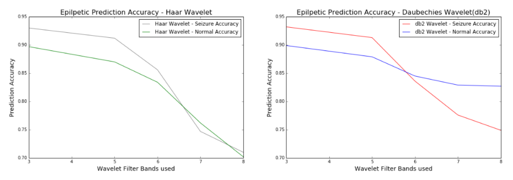
As the wavelets are passed through higher number of filter banks, they are compressed exponentially. As we compress more, we may lose more information from the signal. This is evident from the graph that as the filter bands increases, our prediction accuracy also reduces.
As mentioned earlier, the shape of the daubechies wavelet resembles the shape of the scalp EEG data. From the graph shown above, daubechies wavelet gives better accuracy even at higher filter bank levels compared to haar wavelets.
Below you find the table showing the exact accuracies obtained using Random Forest with 300 trees and maximum depth as 5.
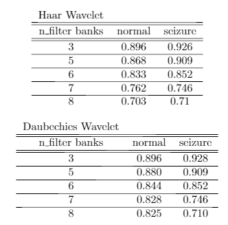
The following tables shows the results obtained from other regression algorithms.
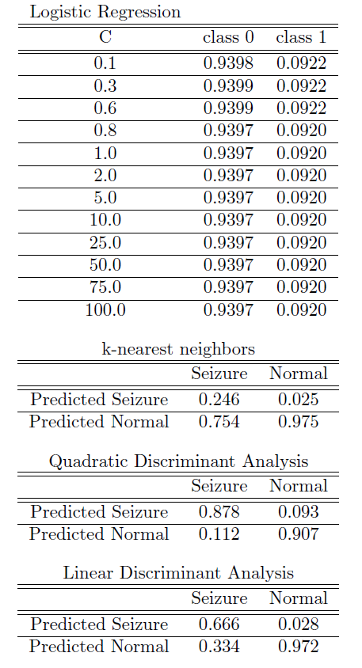
6 Generalization to other patients
6.1 Fourier approach
Previously we used data from a single patient to fit a model and make predictions. Can we use the same model to predict seizures for other patients? Shoeb warned that multi-patient classifiers would not be as effective. Seizures can differ dramatically between patients. Artifacts for one patient can look like a seizure for another patient.
The patient-specific random forest had impressive results on testing sets. We separated predictions made during the day and the night. We do not seem to do much better at night like we could have expected when we looked at scatter plots of the data.
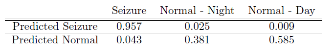
Next we applied this model to new patients to see if we could generalize this model. Unfortunately, the number of false negatives went up dramatically from 4.3% to 43.3%. In addition, the model accuracy on normal activity decreased from 96.4% to 87.1%. The number of false positives increases more significantly during the day.
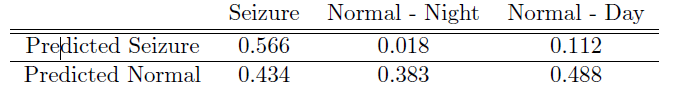
6.2 Patient-specific model(DWT)
The patient specific random forest model gave the impressive results as shown below. Random forest - Patient 1 model
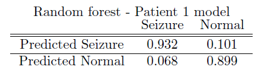
When we applied the same model for other patients to see if we could generalize the model. Similar to Power spectrum approach, false negatives increased dramatically and model accuracy also decreased.
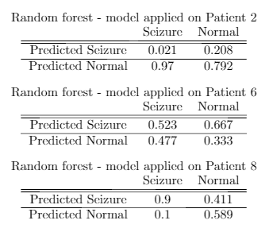
As you can see above, the accuracy differs for every patient. Based on this, we could arrive at a conclusion that an activity termed as epileptic for one person could be a normal activity for another person. So, based on the above, it is not possible to generalize the model across patients.
6.3 Multi-patient model(power spectrum)
Next we created a multi-patient model. We merged the data from 5 patients. We did the same split of train and test with 80/20% as done before. We used the same Random Forest approach by growing 300 trees with maximum depth of 2. Like expected this model is not as effective as our patient-specific model. We have 20.5% of false negatives and 6.3% of false positives. It is better though than applying a model from one patient to another.
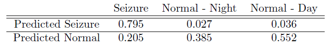
6.4 Multi-patient model(DWT)
We created a multi-patient model using DWT approach also. We merged data from 4 patients. We did the same split of train and test with 80% and 20% as done before. We applied the same Random forest classifier with 300 trees and maximum depth of 5. The result was better than the generalization of one patient model. But still has quite some false positives 16.6% and false negatives 21.7%.
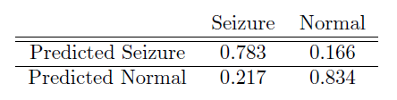
7 Conclusion
We presented two approaches to detect seizures based on EEG data. We first used either Fourier's Power Spectrum or Discrete Wavelets to transform the signals and extract the structure behind the noisy time series. After multiple cross validation, it seems that Random Forest with balanced classes, 300 trees and a max depth of 2 lead to the highest accuracy for class 1 (seizure). Indeed, our goal was to minimize the number of false negative, predict a normal activity while the patient is experiencing a seizure. The two transform methods provided very similar results. One approach can be considered as a cross-validation of another. Comparison of multiple approaches are essential in high risk industries such as medical.
We have proved that a patient-specific model outperforms a non-specific model. It is also impossible to use a model fit on one patient to predict seizures on another patient without a serious loss in accuracy.
8 References
- Application of Machine Learning To Epileptic Seizure Detection Ali Shoeb and John Guttag (MIT, 2010)
- Application of machine learning to epileptic seizure onset detection and treatment Ali Shoeb (MIT PhD thesis)
- Signal Classification by Power Spectral Density: From Euclid to Riemann (K.M.Wong, 2011)
- EEG Signal Classification Using Power Spectral Features and linear Discriminant Analysis: A Brain Computer Interface Application Jaime F. Delgado Saa and Miguel Sotaquirá Gutierrez (2010)
- Analysis of EEG records in an epileptic patient using wavelet transform Hojjat Adeli, Ziqin Zhou, Nahid Dadmehr (Journal of Neuroscience Methods, 2003)
Authors and Contributors
In 2016, Hannah Bend, Sathish Kumar, Yohann Smadja and Sanjay Tiwari.